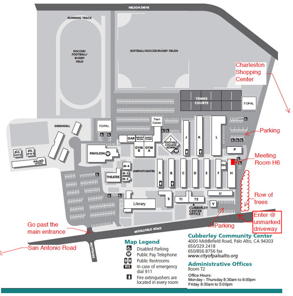

Puerto Rico Benefit Concert in Palo Alto
Thursday November 9, 2017
6-9 pm (live music 7:15-8:30)
Cubberley Community Center, Lecture Room H1
4000 Middlefield Rd, Palo Alto, CA 94303
Join Smorgaschord for a Puerto Rico benefit in the Palo Alto Cubberley Community Center, Room H1.
A small group of Bay Area friends has a direct connection with Parroquia Santa Luisa de Marillac, a community in San Juan, Puerto Rico that is still without electricity, clean water, etc. Can our local community band together to help another community? After the event, all supplies gathered will be shipped in large flat-rate USPS boxes (hooray for US mail still working reliably in PR!) directly to Parroquia Santa Luisa de Marillac, where they will be distributed based on need.
What do they need? Basics that help with living without reliable power or water. Some generators work on and off, so rechargeable batteries, and any sort of water purification tablets or tools. Canned food. Stuff we take for granted. See list below. Please help!
- Live music from Smorgaschord from 7:15 PM until 8:30 PM.
- Free entry
- Representing Parroquia Sta. Luisa de Marillac, guest speaker Eileen Grega will give details on the current situation in Puerto Rico – where her family lives, and can help answer your questions.
- Hot apple cider and baked goods will be provided in exchange for a donation.
- Write a letter/card of encouragement at the card-making station. Great for kids! (Materials provided.)
- Drop off donated items from the list below, and help fill boxes and prepare them to be shipped.
- Make a monetary donation to the American Red Cross relief effort for Hurricane Maria (tax-deductible donation) OR "sponsor a box" ($18.85 per large flat rate box, shipped directly to PR via US mail).
- Batteries (high demand) - AA, AAA, D rechargeable
- Water Purifiers (high demand) - tablets, drops, straws, water bottles, etc.)
- Small battery-operated fans
- Candlesticks or battery-operated lanterns
- First Aid Kits
- Diapers (size - for 1-year-olds)
- XL Adult Diapers
- Wipes (baby)
- Bleach wipes
- Mosquito repellent wipes or lotion (not spray)
- Canned meats - tuna, spam, chicken, etc.
- Canned vegetables, whole beans, soups
- Evaporated Milk (cans)
- Enfamil Baby Formula (yellow cans)
- Powder Milk
- Protein Powder
- Beef Jerky
- Rice
- Instant Coffee
- Paper plates, utensils, cups, napkins
The map below identifies room H6, which is close to where the benefit is in room H1. More important, it gives hints on where to park most conveniently.
(Click map to enlarge)
{kind=link}